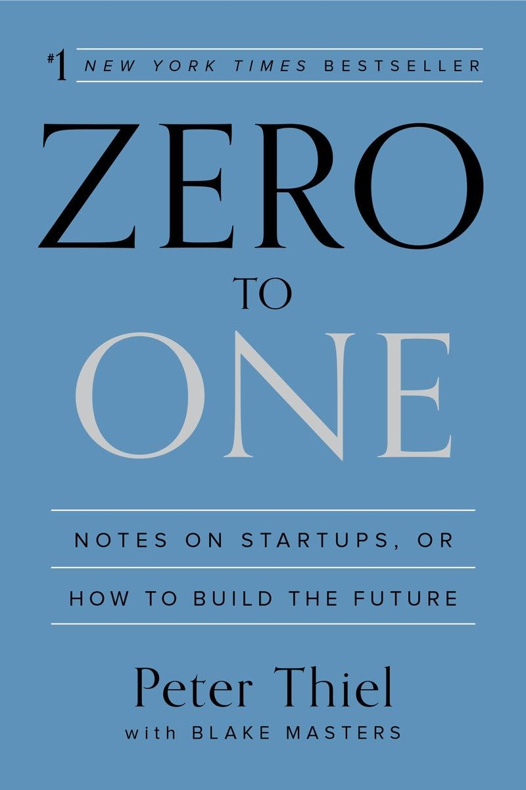

Zero To One
Book By Peter Thiel
What is Palantir?
A data software company that Peter co-founded. A South Korean company forced $5 million upon PayPal, now that's cool! (pg. 18)
The March 2000 financing round (before the bubble popped) brought them the time needed for PayPal's success... talk about timing.
Lessons for startups:
- Make incremental advances
- Stay lean and flexible
- Improve on the competition
- Focus on product
1. Make incremental advances Grand visions inflated the bubble, so they should not be indulged. Anyone who claims to be able to do something great is suspect, and anyone who wants to change the world should be more humble. Small, incremental steps are the only safe path forward.
2. Stay lean and flexible All companies must be "lean," which is code for "unplanned." You should not know what your business will do; planning is arrogant and inflexible. Instead, you should try things out, "iterate," and treat entrepreneurship as agnostic experimentation.
3. Improve on the competition Don't try to create a new market prematurely. The only way to know you have a real business is to start with an already existing customer, so you should build your company by improving on recognizable products already offered by successful competitors.
4. Focus on product, not sales If your product requires advertising or salespeople to sell it, it's not good enough: technology is primarily about product development, not distribution. Bubble-era advertising was obviously wasteful, so the only sustainable growth is viral growth.
These lessons have become dogma in the startup world; those who would ignore them are presumed to invite the justified doom visited upon technology in the great crash of 2000. And yet the opposite principles are probably more correct: 1. It is better to risk boldness than triviality. 2. A bad plan is better than no plan. 3. Competitive markets destroy profits. 4. Sales matters just as much as product.
There's a self-serving bias when describing market conditions by both competition and monopolies.
A Favorite Quote:
A business either thinks money is important or money is everything.
. A monopoly will think the former and patents are monopoly tools............Okay, Peter likes monopolies.